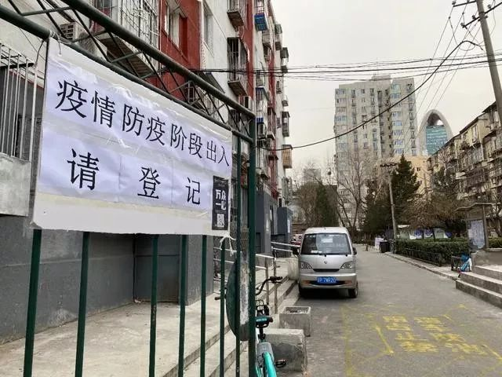

口述实录 | 第15次，我终于敲开了这户人家的大门，鞋子都磨破了
原文链接 备份链接 说不累肯定是假的，但是再累，也得坚持。我们工作做到位了，小区居民的健康才能更有保障。希望这次疫情赶快过去。 口述 | 周 荣 整理 | 应 琛 我是静安区芷江西路街道三兴居民区的党总支书记。老实说，基层防控的压力是挺大 …

乌鸦曾是单读的一名编辑，在去年夏天离开单读编辑部之后，她依然留在北京，继续打拼。今年春节，乌鸦没有计划回家，也拒绝了朋友的出游邀约，而是继续驻守北京。令她未曾料到的是，新型冠状病毒疫情的到来，以及她武汉籍的身份，使这个春节变得麻烦不断。

新北漂日记
撰文：乌鸦
一
2 月 3 日，远程办公的第一天，在北京借宿的第五天。借宿的小区位于朝阳区，距离在北京租赁的社区 16 公里，是朋友的朋友家闲置的一居室。
1 月 29 日晚 9 点，我和室友坐着室友父母从河北赶来的车，抵达了暂时的住所。时间往前倒推三个小时，同日晚 6 点，我和室友接到了房东的电话，大致意思是今晚需要立即搬离社区，不然居委会就会对我们“强制搬离”，因为居民恐慌了。我和室友对这个消息表示十分困惑，毕竟晚 5 点才接到居委会办事员的电话，被嘱咐要在家隔离 14 天，我还和他确定了能不能在社区遛狗的问题。当然了，他开头没来由的那句，“有居民反映你有四天不在家啊”，我也没忘记。
时间再往前推一点。1 月 29 日下午 2 点，和室友一起去居委会和派出所登记了个人信息。为了避免客套，我主动向办事员表明自己是武汉人，但是春节期间从未离京，并出示了计划往返武汉的退票记录。室友则说明了她春节期间往返河北的具体时间，除了父母，基本也没接触他人。对方劝慰我们别担心，他们只是例行公事，问了问我们有没有测过体温呀身体有没有异常，记得抽时间带上照片办一办居住证。我们说测过体温，没有异常，一直懒得办居住证。
出了居委会，和室友商量着去便利店买吐司。路过在街边闲坐的几位邻居，我问室友，是我的错觉吗，怎么感觉他们都在看我们呀。去了两家便利店也没买到吐司，接到了居委会办事员打来的电话，问我有没有接到过警察的电话，我说没有，他说要是警察问你们体温正不正常你就说正常啊，我说好，他说要不你们还是回这里测一个吧，我说好。过了两分钟，他又打来了电话，他说算了你们别来了，要是问你有没有在居委会测过体温你就说测过啊，我说好。挂了电话转头和室友说，服了，真是上上下下一个样儿。
房东阿姨听出了我们的困惑，进一步和我们说，现在的情况是居委会觉得你们没问题，派出所也觉得你们没问题，但是居民觉得你们有问题。为什么呢？因为你是武汉的呀。反复和房东强调没有离京的事实无果后，要来了居委会主任的电话。主任说，我们不是强制你们搬离，我们是建议你们搬离，现在是特殊时期，居民的情绪都比较激动，如果你们不搬离的话，我们不能保证你们的安全。于是我们来回打了好几通电话，问了好几个朋友，还是在茫茫夜色中，在街边实监工的居民们的视线和粗鄙的言语中，被居委会主任拍打着肩膀说，“知道你们受了委屈，可别让父母担心呀“的老套劝诫中，卷着被子，走了。
强制，建议，熟悉吗，百玩不厌的，绝对正确的文字游戏。

二
2 月 4 日，立春，北京两天前下的雪已经残留的不多了。因为朋友的帮助，我和室友没有同室友的父母一起回河北，而是和朋友的朋友一起，通过小区门口体温枪的测量，搬进了完全不熟悉的区域，进入了灰色地带。
至此，我终于不再只是疫情的看客了。不再只是刷着微博，刷着报道，提醒在武汉的家人和朋友戴口罩勤洗手的互联网公民了。
室友和我对这件事情的处理方向有着明显的不同。甚至可以说，我们的唯一共识是我们在整个事件中的合法、合理性，一致认为因为户籍（实际造成）侵犯个人居住权的结果是愚蠢又偷懒的行径。但如何处理这种不公正，在什么时间点去做什么事情，我们表现出了较大的分歧。室友认为在大疫情下的小牺牲不容忽视，我则对什么都表示理解，总觉着比起那千千万万个人，我又算得了什么呢。
1 月 30 日起，在室友的主动申诉下，我们和两家媒体取得联系，得知在北京有很多返京人士面临相似的情况；和 12345 打了电话，进一步确认了返京人士隔离的相关条例和，唉，我们真没违法违规的客观事实；准备就此撰写如何面对返京人士的资料，最后整理成了通俗版的公众防护指南，选摘了由国家卫生健康委员会疾预防控制局组织编写，中国疾病预防控制中心编著的《新型冠状病毒感染的肺炎公众防护指南》中的部分段落；截取手机里的动车退票凭证、电子购物清单、滴滴打车订单、当日步数、通话记录、聊天记录，汇总成《被搬家住户春节行程记录》PDF，和整理的公众防护指南一道发给居委会主任，希望有机会能和居民当面聊聊，澄清误会。
来不及政治抑郁，来不及对糟糕形势浪漫化处理，忙着用隐私自证清白。虽然也明白“清不清白”算不上是这件事的核心。
尔后，收效甚微。居委会主任表示知道了我们的诉求，会去和居民沟通；和居民沟通过了，他们现在情绪还是很激动，不愿意和你们沟通，你们还是在外隔离 14 天吧，另外，你们怎么没有居住证呀。你瞧，这重点怎么又打到居住证了呢。于是又和房东沟通，房东说现在全员出动对抗疫情，居住证加急也办不了，你们 14 天后再回去吧，忍下这 14 天再回去就消停了。

三
睡醒时翻出行的 app，才发现自 2 月 1 日起，大部分国家宣布，在过去 14 天内逗留过湖北的外国人或持有湖北省签发的护照人员，拒绝入境。有一点点后悔没有答应和朋友趁着延长的假期出国去，脑子被疫情的数字和文字塞得满满的，总觉着出去怎么也不可能尽兴，又有种在危难时期抛弃祖国的愧疚感。等到“出去”的选择权被彻底拿走后，才明白自作多情这个毛病真得改一改，外国不欢迎你，你的国家未必就待见你。
暂居的一个明显好处是，吃多少买多少，几乎不会浪费食物了。计算时间的方式由查看手机，变成了观赏南面的窗户洒进房间里的光，在早晚拍摄测量的体温，一天就又过去了。
因为外界对湖北户籍的重量级关注，生平第一次对自己产生了地域性的认知。我在很多时刻将以往的固有观念摆在一边——认为国籍/户籍不能定义一个人——而是非常有针对性的想念在武汉的家人和朋友们，希望他们一直平安健康。除了反复叮嘱做好防护措施，倒也不会多主动地去和他们探讨疫情。你难免听到他们说，别看了，别看那些新闻就会好很多。
认为坏消息就是谣言，等待官方出示喜讯（例如，双黄连可抑制新型冠状病毒）；或者认为坏消息不一定是谣言，但因为会对自己造成心理创伤，于是闭目塞听的选择，都令人难以信服。关注那些声音，是一件不得不去做的事情，毕竟看见了，也没法再蒙上眼睛说不曾看见。至于我们真正为此付出的代价，真正能够算得上是损伤的东西，无非是一些更多的心碎和眼泪，这点我们应该心知肚明。所以在被允许看见的时候就要看下去，看见在一线奋战的医护人员，看见民间志愿者，看见爱心人士，看见记者，看见求助讯息，看见居心不良，看见寡义廉耻。再保存体力，吃好睡好，记住一切。
灾难会过去的，灾难当然是会过去的。但现实里每一次能够被重建的美好，都是有人在背后付出的成果。毕竟在危险到来的时刻，在公信力面临挑战的时刻，我们也看见了太多高贵的灵魂，太多伟大的瞬间，即便成就“高贵”和“伟大”的代价从来不值得赞颂，但他们值得被记住。
临睡前，居委会主任又打来了电话，建议我们让借住的社区开一份隔离证明。我们表示证明是不可能开的，一来我们本就不必要隔离，其他社区没有义务为我们做出保障；二来暂住的房间得益于朋友的好心帮忙，怎么好意思再给人添麻烦。交涉了几轮后，我们双方都一致认为自行隔离 14 天后也未必能收获居民的信任，达成满意的结果，于是室友提出自愿搬离社区，但需要留存找房搬家所必需的时间，在此之前还是希望能尽早搬回社区，以便打包行李。于是主任说好，我去沟通一下。
下个月会在哪里呢，是我在北京生活的两年间问过自己最高频的一个问题，这次在外部形势的推动下，好像发问的更紧迫了一点。
*图片来自网络

自征文以来，我们收到了大量来稿，如实写下了他们在疫情期间的所见所闻，这会是一份真挚而沉重的纪录，我们会留存它。
投稿邮箱：anonymous@owspace.com

点击小程序下单，购买最新上市的《单读 23 · 破碎之家：法国文学特辑》
原文链接 备份链接 说不累肯定是假的，但是再累，也得坚持。我们工作做到位了，小区居民的健康才能更有保障。希望这次疫情赶快过去。 口述 | 周 荣 整理 | 应 琛 我是静安区芷江西路街道三兴居民区的党总支书记。老实说，基层防控的压力是挺大 …
原文链接 备份链接 童言是生活在新加坡的三明治专栏作者。自1月23日确诊第一例“新型冠状病毒肺炎”病例以来，目前新加坡已确诊18个病例，在海外确诊数据中排名第三，仅次于日本、泰国。 这场“肺炎”疫情牵动着许多在海外中国人的心绪。华人群体 …
原文链接 备份链接 二月初七（2月29日）。 天又晴了。阴阴晴晴，有点像我的封城日记，开开封封。待在家里时间长了，不知以后出去还习惯否。甚至，还愿意出去否。今天邻居唐小禾老师发了一组东湖的照片，像是无人机所拍，说是近日的。空旷而寂静的东 …
原文链接 备份链接 昨天是武汉封城第一天，三明治紧急发起了每日书特别版《武汉日常》，邀请人在武汉和家乡在武汉的朋友，一起来用文字忠实记录他们在这个特殊时期的生活日常。 招募一经发出，就有近百位朋友迅速响应，其中有一路哭着坚持回家过年的北 …
原文链接 备份链接 本文由娱志The Review原创出品 华东师范大学传播学院学生娱评号 转载需申请授权 作者 | Moe，苏博 编辑 | 华实 导语 “自2020年1月23日10时起，全市城市公交、地铁、轮渡、长途客运暂停运营；无特殊 …